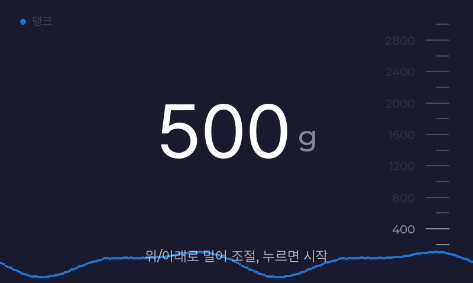
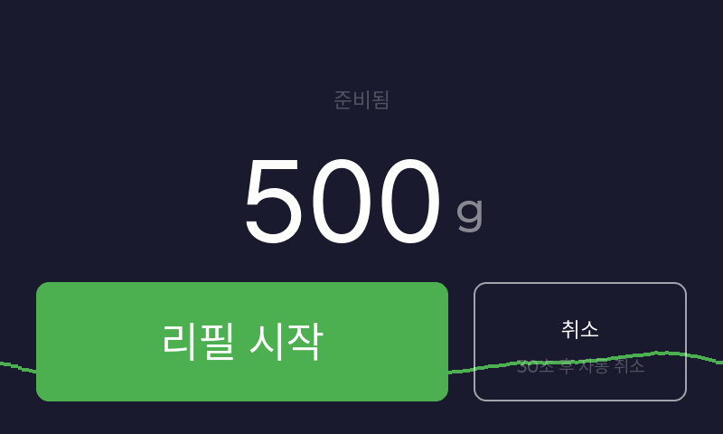
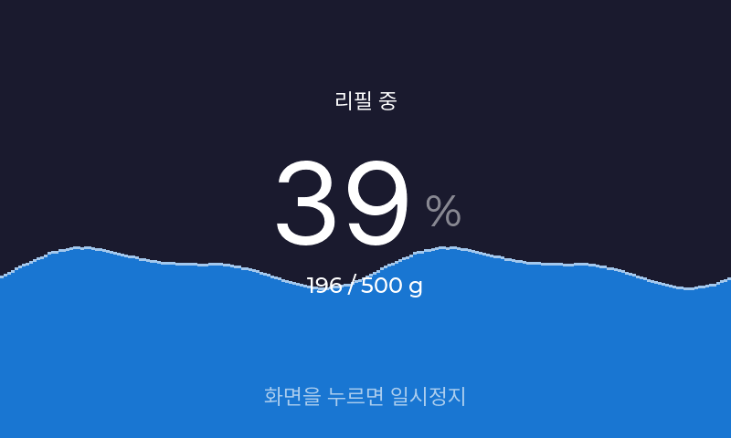
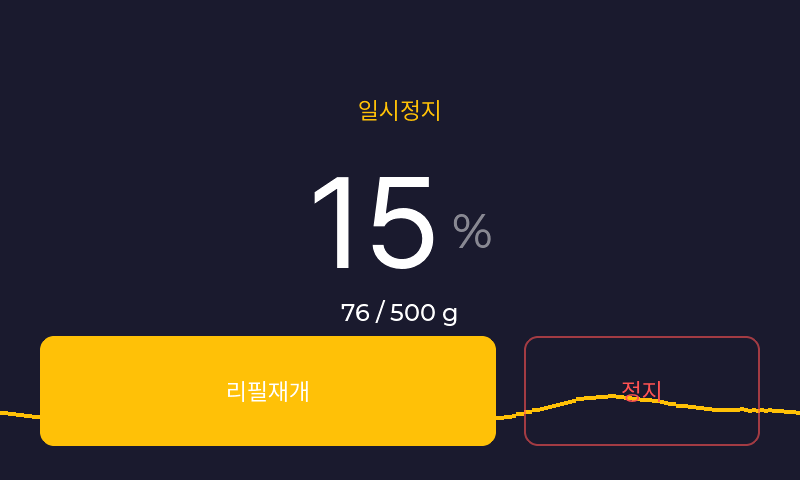
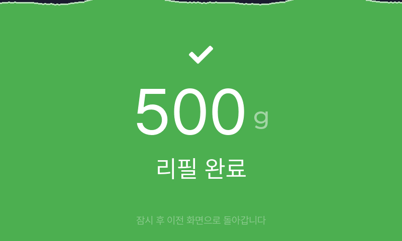
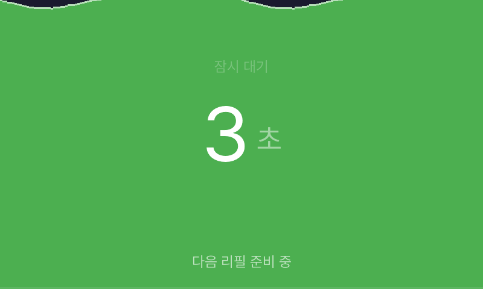

01
가운데 숫자가 리필할 양이에요.
숫자와 단위를 확인하세요. 조절 안내가 보이면 위로 밀어 늘리고, 아래로 밀어 줄일 수 있어요.
조절되지 않으면 매장에서 정한 양으로 이용합니다.
REFILL, STEP BY STEP
용기를 놓고, 양을 고르고, 화면을 탭하세요.
아래 화면에서 먼저 연습해볼 수 있어요.
화면을 보며 따라 하기
이미지를 누르면 크게 볼 수 있어요.

숫자와 단위를 확인하세요. 조절 안내가 보이면 위로 밀어 늘리고, 아래로 밀어 줄일 수 있어요.
조절되지 않으면 매장에서 정한 양으로 이용합니다.

화면을 탭하고, 확인 화면이 나오면 리필 시작을 누르세요. 양과 용기 위치를 한 번 더 확인하세요.
확인 화면 없이 바로 시작되는 매장도 있어요.

진행률을 보며 자리를 지켜주세요. 용기와 노즐을 움직이지 말고, 끝날 때까지 기다려주세요.
잠깐 멈추려면 진행 화면을 한 번 탭하세요.

일시정지한 뒤 계속하려면 리필재개, 이번 리필을 끝내려면 빨간 정지를 누르세요.
넘칠 것 같거나 이상이 있으면 멈추고 직원에게 알려주세요.

펌프가 멈춘 뒤 남은 액체가 떨어질 수 있어요. 완료 표시가 나와도 용기를 바로 꺼내지 마세요.
마지막 방울까지 받을 수 있게 용기를 그대로 두세요.

대기 화면이 끝나고 액체도 더 이상 떨어지지 않는 것을 확인한 뒤 용기를 꺼내세요.
대기 시간은 매장 설정에 따라 달라요.
고정 용량으로 운영하는 매장일 수 있어요. 표시된 양이 용기에 맞지 않으면 직원에게 문의하세요.
반복해서 시작하지 말고 직원에게 알려주세요. 리필 중이라면 화면을 탭해 일시정지한 뒤 정지를 누르세요.
매장마다 양 조절, 색상, 시작 확인과 대기 설정이 다를 수 있어요. 실제 기기에 표시된 안내를 따라주세요.